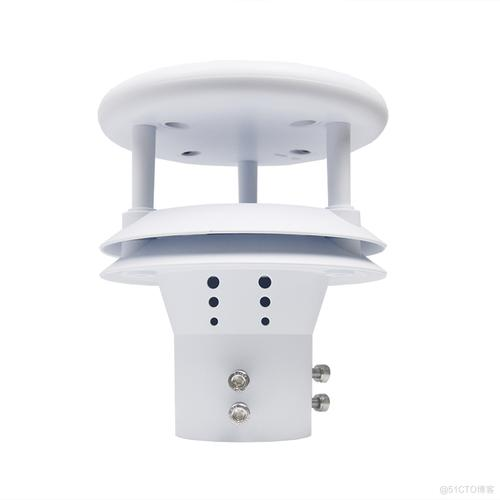
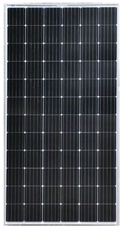
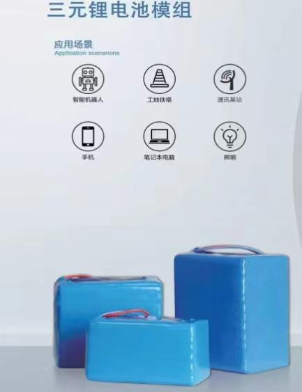
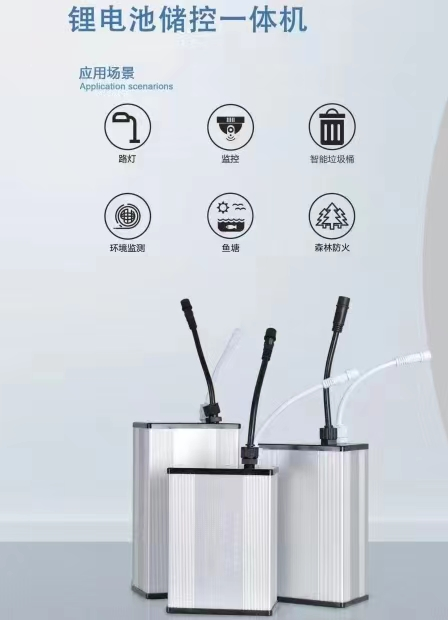
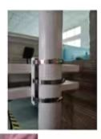
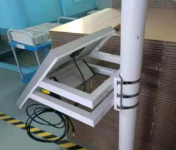
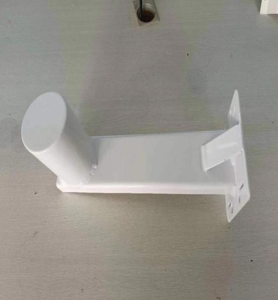
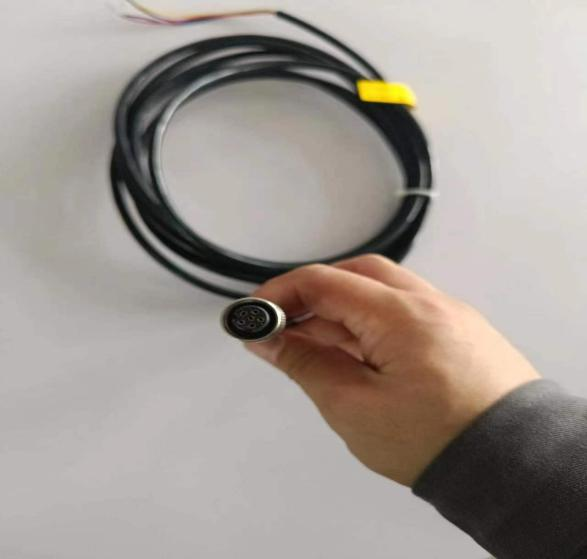
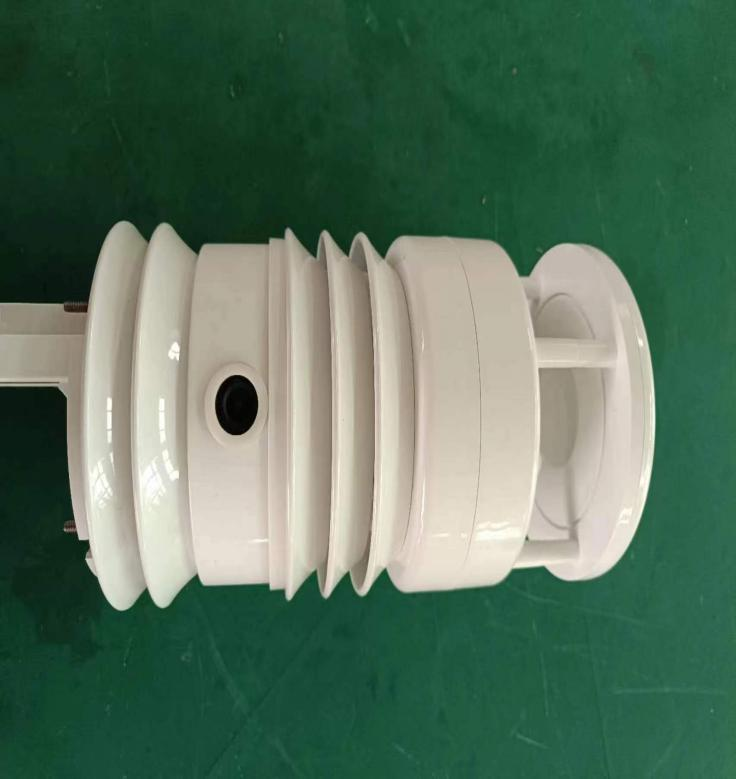

供电方式及电压：直流电源9~30V
功 耗：110mA@12V(联网时）30A@12V（常规）10mA@12V（低功耗时）
工作温度：-40℃~70℃
工作湿度：0~100%RH
输出方式：4GUDP/TCP
RS232
RS485
测量精度：风速：±0.5m/s@或5%
风向：±3°
测量量程：风速：0-40m/s
风向：0-359°



1.用一字螺丝刀把不锈钢扎带将监测传感器固定架安装在杆体上，距离输电线路垂直距离大于1.5米。按照螺丝空位将监测传感器安装在固定架上，紧固螺丝。


2.用一字螺丝刀把不锈钢扎带将太阳能板固定架安装在传感器固定架下方约1米位置杆体上，参照指南针使太阳能板朝向南。按照螺丝空位将太阳能板安装在固定架上，紧固螺丝。

3.将设备连接线按照设备指示孔位对应连接并旋紧，多余线缆盘留整理后用扎带固定在杆上适当位置。


供电方式及电压：直流电源9~30V
功 耗：150mA@12V(联网时）50mA@12V(常规）10mA@12V（低功耗时）
工作温度：-40℃~70℃
工作湿度：0~100%RH
输出方式：ftp/http/mqtt/udp/tcp RS232 RS48
测量精度：风速：±0.5m/s@或5%
风向：±3°
测量量程：风速：0-60m/s
风向：0-359°
空气温度：-50-70℃
1.用一字螺丝刀把不锈钢扎带将监测传感器固定架安装在杆体上，距离输电线路垂直距离大于1.5米。按照螺丝空位将监测传感器安装在固定架上，紧固螺丝。
2.用一字螺丝刀把不锈钢扎带将太阳能板固定架安装在传感器固定架下方约1米位置杆体上，参照指南针使太阳能板朝向南。按照螺丝空位将太阳能板安装在固定架上，紧固螺丝。
3.将设备连接线按照设备指示孔位对应连接并旋紧，多余线缆盘留整理后用扎带固定在杆上适当位置。